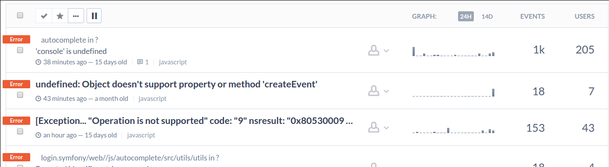
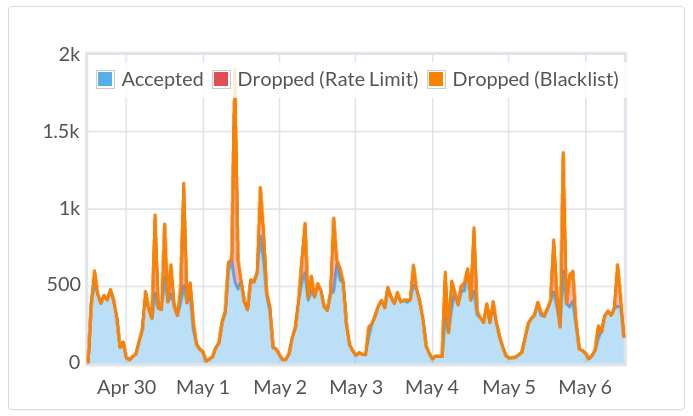

Tracking JS Errors in the Browser using Sentry
Catch that invisible bug!
What is Sentry?
3rd party service integrations
- Notifications: Campfire, Flowdock, Grove.io, Hipchat, IRC, OpsGenie, PagerDuty, Pushover, Slack, Twilio, Webhooks
- Issue tracking: Bitbucket, GitLab, Jira, Lighthouse, Phabricator, Pivotal Tracker, Redmine, Sprint.ly, Taiga, Teamwork, Trello
- Release Tracking: Freight, Heroku

Use it!
 JavaScript (Browser)
JavaScript (Browser)
<script src="https://cdn.ravenjs.com/2.3.0/raven.min.js"></script>
<script>
Raven.config('your DSN goes here').install()
</script>
 JavaScript (Node)
JavaScript (Node)
$ npm install raven --savevar raven = require('raven');
var client = new raven.Client('your DSN goes here');
// Use Sentry as global error tracker.
client.patchGlobal();
 Ruby
Ruby
$ gem "sentry-raven"require 'raven'
Raven.configure do |config|
config.dsn = 'your DSN goes here'
end
# Configure Rack to use it (optional; in config.ru).
use Raven::RackPHP
$ composer require "raven/raven"// In the autoloader:
require_once '/path/to/Raven/library/Raven/Autoloader.php';
Raven_Autoloader::register();// In the application:
$client = new Raven_Client('your DSN goes here');
$error_handler = new Raven_ErrorHandler($client);
$error_handler->registerExceptionHandler();
$error_handler->registerErrorHandler();
$error_handler->registerShutdownFunction()Demo time!

http://is.gd/sentry_meetup
Welcome to the real world
Example issue: IE8 incompatibility
Issue overview
Events over time
How Sentry was great for us
- Several integration problems detected
- A sneaky bug was found
- As it turns out, a lot of Russians still use Windows XP
- The collected data helps us keep our file size footprint small, especially for mobile